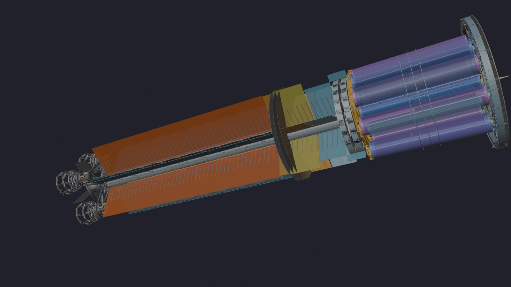
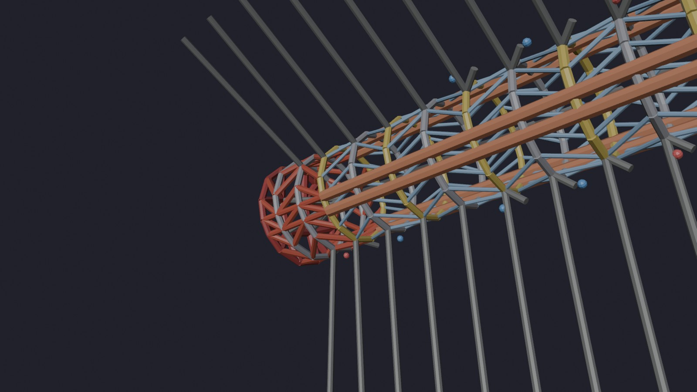
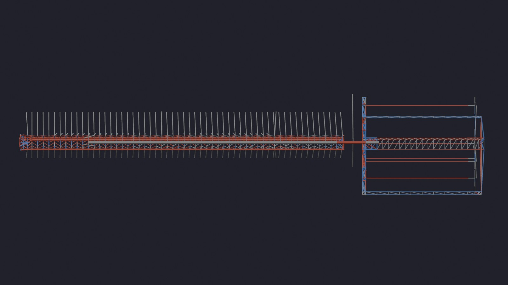

<title>Wayfarer Systems Integration</title>
<meta name="claude:viewport-fit-sides" content="cover">
<link rel="stylesheet" href="https://fonts.googleapis.com/css2?family=IBM+Plex+Sans:wght@400;600&family=IBM+Plex+Mono:wght@400;600&display=swap">
<style>
:root{--bg:#f6f5f1;--fg:#1d1f22;--mut:#5d6168;--line:#d9d6cc;--card:#ffffff;--acc:#b4532a;--ok:#2f7a4a;--warn:#a0661a;--bad:#a8322a}
@media (prefers-color-scheme:dark){:root:not([data-theme="light"]){--bg:#14161a;--fg:#e8e6e0;--mut:#9aa0a8;--line:#2c3038;--card:#1b1e23;--acc:#e08a5a;--ok:#6cc08a;--warn:#e0a85a;--bad:#e07a6a;color-scheme:dark}}
:root[data-theme="dark"]{--bg:#14161a;--fg:#e8e6e0;--mut:#9aa0a8;--line:#2c3038;--card:#1b1e23;--acc:#e08a5a;--ok:#6cc08a;--warn:#e0a85a;--bad:#e07a6a;color-scheme:dark}
body{background:var(--bg);color:var(--fg);font:15px/1.55 "IBM Plex Sans",system-ui,sans-serif;padding-block:24px 64px;padding-left:max(16px,env(safe-area-inset-left,0px));padding-right:max(16px,env(safe-area-inset-right,0px))}
main{max-width:1080px;margin:0 auto;display:flex;flex-direction:column;gap:28px}
h1{font-size:1.9rem;margin:0;text-wrap:balance} h2{font-size:1.2rem;margin:0 0 8px;border-bottom:2px solid var(--acc);padding-bottom:4px;text-wrap:balance}
.eyebrow{font:600 .75rem "IBM Plex Mono",monospace;letter-spacing:.08em;text-transform:uppercase;color:var(--acc)}
p{margin:.4em 0;max-width:70ch} .mut{color:var(--mut);font-size:.9rem}
.kpis{display:grid;grid-template-columns:repeat(auto-fit,minmax(200px,1fr));gap:12px}
.k{background:var(--card);border:1px solid var(--line);border-radius:8px;padding:12px;display:flex;flex-direction:column;gap:2px;min-width:0}
.k span{font-size:.8rem;color:var(--mut)} .k b{font:600 1.15rem "IBM Plex Mono",monospace}
.tw{overflow-x:auto;border:1px solid var(--line);border-radius:8px;background:var(--card)}
table{border-collapse:collapse;width:100%;font-size:.85rem} th,td{padding:6px 9px;border-bottom:1px solid var(--line);text-align:left;vertical-align:top}
th{font:600 .72rem "IBM Plex Mono",monospace;letter-spacing:.04em;text-transform:uppercase;color:var(--mut);white-space:nowrap}
td{font-variant-numeric:tabular-nums} tbody tr:last-child td{border-bottom:0}
.figs{display:grid;grid-template-columns:repeat(auto-fit,minmax(300px,1fr));gap:12px} figure{margin:0;min-width:0} figure img{width:100%;border-radius:6px;display:block}
figcaption{font-size:.8rem;color:var(--mut);margin-top:4px}
details{background:var(--card);border:1px solid var(--line);border-radius:8px;padding:10px 12px} summary{cursor:pointer;font-weight:600}
nav{display:flex;flex-wrap:wrap;gap:6px 14px;font-size:.85rem} nav a{color:var(--acc)}
code{font-family:"IBM Plex Mono",monospace;font-size:.85em;overflow-wrap:anywhere}
</style>
<main>
<header><div class="eyebrow">WSI Phase I · joint ISSA–PSA · Track F working configuration · noncanon</div>
<h1>Wayfarer Systems Integration</h1>
<p>One authoritative joint configuration (WSI-0.1) now drives both the ISSA machinery and the PSA primary structure. The coupled loop converges numerically; physical closure is not yet reached, because the structure must be stiffened from λ 0.63 to 1.95 and lifted above the 0.068 Hz ring spin, and every tonne of that costs about 3.9 t at departure. Track R high-modulus CFRP rails carry the closure without fictional materials.</p>
<p class="mut">Branch <code>claude/cloud/wayfarer-systems-integration</code> · ISSA 8b30b71 · PSA c3138d8/1beb693+ · production main 11f1e94 unchanged · review file <code>REVIEW_WSI_CP3.blend</code></p></header>
<div class="kpis"><div class="k"><span>Joint departure (S-COMB)</span><b>13,212 t</b></div><div class="k"><span>Ship length</span><b>338.3 m</b></div><div class="k"><span>Stability at departure</span><b>0.63 / 1.02 of 1.95</b></div><div class="k"><span>Lead closure (round 1)</span><b>D_hub_ring</b></div></div>
<nav><a href="#s1">Config</a><a href="#s2">Starting points</a><a href="#s3">Convergence</a><a href="#s4">Propellant</a><a href="#s5">Structure</a><a href="#s6">Materials</a><a href="#s7">Ledger</a><a href="#s8">Stability</a><a href="#s9">SSI-1.2</a><a href="#s10">Thermal & electrical</a><a href="#s11">3D model</a><a href="#s14">Profiles</a><a href="#s15">Problems</a><a href="#s16">Decisions</a><a href="#s17">Readiness</a></nav>
<section class="figs"><figure><figcaption>Complete joint ship (WSI-0.1): PSA structure, ISSA machinery, stretched farm, translated Brow</figcaption></figure><figure><figcaption>Aft thrust structure: thrust ring, transition, rails, frames, SSI mounts</figcaption></figure><figure><figcaption>Longitudinal half-section, load paths: red compression, blue tension</figcaption></figure><figure><figcaption>Research alternatives: G-HULL (blue ghost) and the rejected G-ANNULAR sectors (red)</figcaption></figure></section>
<section id="s1"><h2>1 · Shared configuration</h2><p><code>results/wsi_config.json</code> (WSI-0.1) holds coordinates, dimensions, topology (PSA H, six paired rails, stationary hub), materials, propellant and the 13 T-A vessels, SSI-1.1 equipment and mounts, load cases, thermal interfaces, utility routes, maintenance envelopes, keep-outs and technology dependencies, each once. Both teams read it; PSA's <code>wsi_bodies.py</code> reproduces 11,989.1 t without structure exactly.</p></section>
<section id="s2"><h2>2 · Starting points and 14 · historical vs integrated</h2><div class="tw"><table class=""><thead><tr><th>Point</th><th>Departure t</th><th>Length m</th><th>Structure t</th><th>End accel. g</th></tr></thead><tbody><tr><td>Production main (approved)</td><td>1,670 dry + propellant</td><td>289.5</td><td>150 (line)</td><td>—</td></tr><tr><td>ISSA C1.0 (8b30b71 parent)</td><td>8,655</td><td>310.2</td><td>150 (line)</td><td>—</td></tr><tr><td>ISSA WF-F1-C1.1 (150 t structure line, no sized structure)</td><td>9,078</td><td>315.0</td><td>150</td><td>0.66</td></tr><tr><td>PSA Phase II H:hub:F1 on ISSA CP4 stations (PSA coupling)</td><td>12,352</td><td>307.7</td><td>1,223</td><td>0.56</td></tr><tr><td>C1.1 + PSA Phase II structure (provisional combined point)</td><td>13,212</td><td>338.3</td><td>1,223</td><td>0.46</td></tr><tr><td>WSI closure round 1: D_byp_ring</td><td>13,985</td><td>342.7</td><td>1,419</td><td>0.43</td></tr><tr><td>WSI closure round 1: D_byp_ring_HM</td><td>12,954</td><td>336.9</td><td>1,151</td><td>0.47</td></tr><tr><td>WSI closure round 1: D_hub_ring</td><td>14,563</td><td>345.9</td><td>1,569</td><td>0.41</td></tr><tr><td>WSI closure round 1: D_hub_ring_HM</td><td>13,205</td><td>338.3</td><td>1,217</td><td>0.46</td></tr></tbody></table></div>
<p class="mut">The combined point adds 19 t over C1.1's one-pass 13,193 t because cryo and radiators are re-iterated for the longer farm. The ledger closes to the departure once the 150 t line and the 329.5 t production tankage rows leave.</p></section>
<section id="s3"><h2>3 · Convergence history</h2><p>Numerical convergence is reached in a few iterations. It is not physical satisfaction: no closure run yet meets λ ≥ 1.95 and f1 ≥ 0.095 Hz. Each tonne of dry mass costs about 3.9 t of departure through propellant, tankage, cryo and radiators.</p>
<div class="tw"><table class=""><thead><tr><th>Iteration</th><th>Structure t</th><th>Departure t</th><th>Propellant t</th><th>Ship m</th></tr></thead><tbody><tr><td>1</td><td>1,568</td><td>14,563</td><td>9,202</td><td>345.9</td></tr><tr><td>2</td><td>1,568</td><td>14,560</td><td>9,200</td><td>345.9</td></tr></tbody></table></div>
<p class="mut">Preferred round-1 closure D_hub_ring: reconverged departure 14,560 t (10.2 % against the S-COMB sizing point).</p></section>
<section id="s4"><h2>4 · Propellant distribution trade</h2><div class="tw"><table class=""><thead><tr><th>Candidate</th><th>Departure t</th><th>Length m</th><th>CG x m</th><th>I pitch kg m²</th><th>ROM λ fixed</th><th>ROM λ follower</th><th>Shell m²</th><th>Cryo kW</th></tr></thead><tbody><tr><td>T-A</td><td>13,212</td><td>338.3</td><td>115.7</td><td>7.50e+10</td><td>1.08</td><td>3.93</td><td>39,713</td><td>1,146</td></tr><tr><td>T-B tandem modular</td><td>14,015</td><td>348.5</td><td>121.3</td><td>8.05e+10</td><td>1.04</td><td>5.11</td><td>45,879</td><td>1,306</td></tr><tr><td>G-HULL (3 % H2 aft)</td><td>13,212</td><td>—</td><td>113.8</td><td>7.93e+10</td><td>1.10</td><td>3.56</td><td>—</td><td>—</td></tr></tbody></table></div>
<div class="tw"><table class=""><thead><tr><th>Concept G option</th><th>Where</th><th>Verdict</th></tr></thead><tbody><tr><td>G-HULL</td><td>aft vessel inside the hull, x -119..-94 (between the drive transition and the L2 units; MRU, buses and spine start at x -92.7)</td><td>feasible as a small store; structurally negligible (~3 % of H2)</td></tr><tr><td>G-ANNULAR</td><td>three annular sector vessels outside the hull between the HOT blade planes, x -125..-95, r 8.2-20</td><td>NOT FEASIBLE: the sectors are the HOT blades&#x27; view to space; behind a refractory multi-foil shield (e* 0.03) the 20 K load is 19.0 MW, about 0.9 GWe of cooler input, and 17 % of the HOT blade length loses its view (radiator must be replaced, owner rule)</td></tr><tr><td>G-AFT-OF-DRIVE</td><td>storage aft of the nozzle plane</td><td>NOT FEASIBLE: inside the 15 deg plume cone (K-PLUME)</td></tr><tr><td>G-BODY-BAY</td><td>x -70..-20 (PSA Phase II g_aft = 0.3)</td><td>EXCLUDED by the owner (P2-D3); kept as the FE upper bound on the benefit: static lambda 0.712 -&gt; 0.817 (+15 %), structure 1,175.7 -&gt; 1,107.8 t</td></tr></tbody></table></div><p>T-A stays the preferred arrangement. T-B adds 0.8 kt for its modularity. Concept G can only help where the owner excluded it (x −70..−20, +15 % λ in PSA's FE). Elsewhere it is either negligible (3 % of the H2 inside the aft hull) or not feasible.</p></section>
<section id="s5"><h2>5 · Structural comparison (PSA FE on S-COMB)</h2><div class="tw"><table class=""><thead><tr><th>Deck</th><th>PSA t</th><th>Deck t</th><th>λ left 1 (static / follower)</th><th>λ left 0.5</th><th>λ left 0</th></tr></thead><tbody><tr><td>TD-A</td><td>1,157</td><td>599</td><td>0.63 / 1.02</td><td>0.89 / 1.35</td><td>1.07 / 1.56</td></tr><tr><td>TD-B</td><td>1,252</td><td>704</td><td>0.61 / 1.00</td><td>0.88 / 1.36</td><td>1.05 / 1.56</td></tr><tr><td>TD-D</td><td>976</td><td>442</td><td>0.62 / 1.00</td><td>0.89 / 1.38</td><td>1.05 / 1.64</td></tr><tr><td>TD-E</td><td>2,417</td><td>470</td><td>0.60 / 0.97</td><td>0.82 / 1.27</td><td>0.92 / 1.43</td></tr><tr><td>TD-F</td><td>1,270</td><td>538</td><td>0.82 / 1.48</td><td>1.02 / 1.56</td><td>1.18 / 1.78</td></tr></tbody></table></div>
<h3>Closure runs (round 1, λ only, 10 passes)</h3><div class="tw"><table class=""><thead><tr><th>Run</th><th>Strength t</th><th>Stiffening t</th><th>Total t</th><th>min λ</th><th>min f1 Hz</th><th>Closed</th><th>Reconverged departure t</th></tr></thead><tbody><tr><td>D_byp_ring</td><td>1,056</td><td>313</td><td>1,419</td><td>1.67</td><td>0.082</td><td>no</td><td>13,985</td></tr><tr><td>D_byp_ring_HM</td><td>904</td><td>187</td><td>1,151</td><td>1.45</td><td>0.087</td><td>no</td><td>12,954</td></tr><tr><td>D_hub_ring</td><td>1,009</td><td>516</td><td>1,569</td><td>1.86</td><td>0.081</td><td>no</td><td>14,563</td></tr><tr><td>D_hub_ring_HM</td><td>906</td><td>260</td><td>1,217</td><td>1.86</td><td>0.080</td><td>no</td><td>13,205</td></tr></tbody></table></div>
<p class="mut">ROM (planar beam, frequency-matched to the FE 0.0956 Hz): the global beam mode gives 1.08 fixed-direction and 3.93 follower. The FE critical modes are local (farm walls and deck at departure, the aft thrust structure at end of burn), and they govern.</p></section>
<section id="s6"><h2>6 · Structural materials (WSI-D)</h2><div class="tw"><table class=""><thead><tr><th>Material</th><th>Track</th><th>ρ</th><th>E GPa</th><th>Fc MPa</th><th>E/ρ MJ/kg</th><th>Rail mass for Al EI</th><th>α ppm/K</th><th>Creep</th><th>Joint eff.</th><th>Radiation</th></tr></thead><tbody><tr><td>R-AL6061</td><td>R</td><td>2,700</td><td>69</td><td>276</td><td>25.5</td><td>1.00</td><td>23.6</td><td>negligible below 0.4 Tm</td><td>0.85</td><td>metallic: displacement damage negligible at hull doses</td></tr><tr><td>R-ALLI2195</td><td>R</td><td>2,710</td><td>76</td><td>560</td><td>28.0</td><td>0.91</td><td>22.0</td><td>negligible below 0.4 Tm</td><td>0.85</td><td>metallic: displacement damage negligible at hull doses</td></tr><tr><td>R-TI64</td><td>R</td><td>4,430</td><td>114</td><td>900</td><td>25.7</td><td>0.99</td><td>8.6</td><td>negligible below 0.4 Tm</td><td>0.85</td><td>metallic: displacement damage negligible at hull doses</td></tr><tr><td>R-CFRP-IM</td><td>R</td><td>1,600</td><td>165</td><td>1,400</td><td>103.1</td><td>0.25</td><td>-0.4</td><td>matrix-limited above ~400 K</td><td>0.6</td><td>matrix crosslink/scission: OPEN dose limit; keep inside shadow cones</td></tr><tr><td>R-CFRP-HM</td><td>R</td><td>1,650</td><td>300</td><td>800</td><td>181.8</td><td>0.14</td><td>-1.1</td><td>matrix-limited above ~400 K</td><td>0.6</td><td>matrix crosslink/scission: OPEN dose limit; keep inside shadow cones</td></tr><tr><td>F-ALSC-NANO</td><td>F</td><td>2,670</td><td>72</td><td>560</td><td>27.0</td><td>0.95</td><td>23.0</td><td>negligible below 0.4 Tm</td><td>0.85</td><td>metallic: displacement damage negligible at hull doses</td></tr><tr><td>F-CNT-CFRP</td><td>F</td><td>1,580</td><td>150</td><td>1,450</td><td>94.9</td><td>0.27</td><td>0.1</td><td>matrix-limited above ~400 K</td><td>0.6</td><td>matrix crosslink/scission: OPEN dose limit; keep inside shadow cones</td></tr><tr><td>F-CNT-YARN</td><td>F</td><td>1,500</td><td>200</td><td>300</td><td>133.3</td><td>0.19</td><td>-0.5</td><td>matrix-limited above ~400 K</td><td>0.6</td><td>matrix crosslink/scission: OPEN dose limit; keep inside shadow cones</td></tr><tr><td>F-FGM-TI-SIC</td><td>F</td><td>4,000</td><td>160</td><td>800</td><td>40.0</td><td>0.64</td><td>7.0</td><td>fibre creep 1600-1800 K</td><td>0.85</td><td>metallic: displacement damage negligible at hull doses</td></tr><tr><td>F-SICSIC-1800</td><td>F</td><td>2,800</td><td>240</td><td>600</td><td>85.7</td><td>0.30</td><td>4.5</td><td>fibre creep 1600-1800 K</td><td>0.85</td><td>matrix crosslink/scission: OPEN dose limit; keep inside shadow cones</td></tr></tbody></table></div>
<div class="tw"><table class=""><thead><tr><th>Rail material (global EI ×1.8)</th><th>Track</th><th>Rails t</th><th>Departure t</th><th>ROM λ fixed</th></tr></thead><tbody><tr><td>R-AL6061</td><td>R</td><td>212</td><td>13,607</td><td>1.93</td></tr><tr><td>R-CFRP-HM</td><td>R</td><td>30</td><td>12,844</td><td>1.97</td></tr><tr><td>F-ALSC-NANO</td><td>F</td><td>201</td><td>13,559</td><td>1.93</td></tr><tr><td>F-CNT-CFRP</td><td>F</td><td>57</td><td>12,958</td><td>1.96</td></tr></tbody></table></div>
<p>The hot-loop composite properties (FT-01, 100 MPa at 2,000 K) are not reused for cold structure. FT-10 (CNT composite) is registered as a sensitivity only, and the closure path uses Track R CFRP-HM.</p></section>
<section id="s7"><h2>7 · Integrated ledger (D_hub_ring, reconverged)</h2><details><summary>ledger 14,559.9 t vs departure 14,559.9 t: 51 rows, one owner each</summary><div class="tw"><table class=""><thead><tr><th>Item</th><th>t</th><th>Owner</th><th>Category</th></tr></thead><tbody><tr><td>forward_impact_shielding</td><td>100.0</td><td>forward_impact_shielding</td><td>HISTORICAL</td></tr><tr><td>habitat_pressure_structure@ring_A</td><td>45.0</td><td>habitat_pressure_structure</td><td>HISTORICAL</td></tr><tr><td>habitat_pressure_structure@ring_B</td><td>45.0</td><td>habitat_pressure_structure</td><td>HISTORICAL</td></tr><tr><td>eye_sensors</td><td>25.0</td><td>eye_sensors</td><td>HISTORICAL</td></tr><tr><td>life_support_garden_medical@ring_A</td><td>27.5</td><td>life_support_garden_medical</td><td>HISTORICAL</td></tr><tr><td>life_support_garden_medical@ring_B</td><td>27.5</td><td>life_support_garden_medical</td><td>HISTORICAL</td></tr><tr><td>water_radiation_shielding@ring_A</td><td>80.0</td><td>water_radiation_shielding</td><td>HISTORICAL</td></tr><tr><td>water_radiation_shielding@ring_B</td><td>80.0</td><td>water_radiation_shielding</td><td>HISTORICAL</td></tr><tr><td>water_radiation_shielding@refuge</td><td>20.0</td><td>water_radiation_shielding</td><td>HISTORICAL</td></tr><tr><td>workshop_spares_cargo</td><td>60.0</td><td>workshop_spares_cargo</td><td>HISTORICAL</td></tr><tr><td>drive_package</td><td>250.0</td><td>drive_package</td><td>HISTORICAL</td></tr><tr><td>radiators_thermal</td><td>100.0</td><td>radiators_thermal</td><td>HISTORICAL</td></tr><tr><td>power_computers_steering_comms</td><td>50.0</td><td>power_computers_steering_comms</td><td>HISTORICAL</td></tr><tr><td>food_consumables</td><td>10.0</td><td>food_consumables</td><td>HISTORICAL</td></tr><tr><td>design_margin</td><td>30.0</td><td>design_margin</td><td>HISTORICAL</td></tr><tr><td>circ001@ring_A</td><td>20.1</td><td>circ001</td><td>HISTORICAL</td></tr><tr><td>circ001@ring_B</td><td>20.1</td><td>circ001</td><td>HISTORICAL</td></tr><tr><td>operating_inventory</td><td>200.0</td><td>operating_inventory</td><td>HISTORICAL</td></tr><tr><td>L1 (derived)</td><td>70.0</td><td>ISSA</td><td>NEW</td></tr><tr><td>L3</td><td>12.0</td><td>ISSA</td><td>NEW</td></tr><tr><td>storage (buffer + restart)</td><td>21.5</td><td>ISSA</td><td>NEW</td></tr><tr><td>distribution</td><td>8.0</td><td>ISSA</td><td>NEW</td></tr><tr><td>scatter allowance (OPEN)</td><td>3.0</td><td>ISSA</td><td>NEW</td></tr><tr><td>ECLSS modular increment</td><td>4.8</td><td>ISSA</td><td>NEW</td></tr><tr><td>bulkhead relocation</td><td>2.0</td><td>ISSA thermal</td><td>HISTORICAL (moved)</td></tr><tr><td>LOG-G1 tare (3 t containers, 12 months)</td><td>4.8</td><td>ISSA logistics</td><td>NEW</td></tr><tr><td>L2 (3 x 3.5 MWe, FT-03 1500 K inlet) (restart packs moved to the storage line)</td><td>284.1</td><td>ISSA power</td><td>NEW</td></tr><tr><td>L2 sections 950 K cross-strapped + dual headers</td><td>7.3</td><td>ISSA</td><td>NEW</td></tr><tr><td>hot loop H6a</td><td>565.2</td><td>ISSA</td><td>NEW</td></tr><tr><td>L2 NaK transport loops + pumps (Stage E)</td><td>46.7</td><td>ISSA</td><td>NEW</td></tr><tr><td>L2 section hardware above the Phase VI header line (Stage E)</td><td>31.7</td><td>ISSA</td><td>NEW</td></tr><tr><td>distribution above the Phase VI line (Stage F)</td><td>0.0</td><td>ISSA</td><td>NEW</td></tr><tr><td>robots, crawlers, MRU carriage + rail (Stage H)</td><td>10.6</td><td>ISSA MRO</td><td>NEW</td></tr><tr><td>body-bay module 10 racks (relocated dry store, Stage H)</td><td>4.0</td><td>ISSA</td><td>NEW</td></tr><tr><td>cryocooler stations (final T-A, increment over the existing coolers)</td><td>14.0</td><td>ISSA cryo</td><td>REPLACEMENT</td></tr><tr><td>HOT forward-pointing fin manifolds (DR-3D-04)</td><td>17.9</td><td>ISSA thermal</td><td>NEW</td></tr><tr><td>LOW forward tip extensions (3 blades)</td><td>7.2</td><td>ISSA thermal</td><td>NEW</td></tr><tr><td>WARM pump upgrade (451 K, +mass flow)</td><td>0.1</td><td>ISSA thermal</td><td>NEW</td></tr><tr><td>MRU fixtures (MIF-A/C)</td><td>1.1</td><td>ISSA MRO</td><td>NEW</td></tr><tr><td>MRU second rail (twin rails clear of bus 3)</td><td>4.1</td><td>ISSA MRO</td><td>NEW</td></tr><tr><td>MRU burn restraints (two park stations)</td><td>0.6</td><td>ISSA MRO</td><td>NEW</td></tr><tr><td>EXT-TA external transfer arm (H6a EM pumps)</td><td>2.5</td><td>ISSA MRO</td><td>NEW</td></tr><tr><td>L1 conductors resized for the reactive peak</td><td>0.0</td><td>ISSA electrical</td><td>NEW</td></tr><tr><td>payload: ECLSS CO2 reserve</td><td>0.2</td><td>ISSA ECLSS</td><td>PAYLOAD</td></tr><tr><td>PSA primary structure D_hub_ring (strength 1009 + stiffening 516 + joints, casing, rotating)</td><td>1,568.3</td><td>PSA</td><td>STRUCTURE</td></tr><tr><td>dedicated shutdown store (C-01): high-power Li-ion / hybrid capacitor pack, services bus x -92..-80</td><td>2.4</td><td>ISSA electrical</td><td>NEW (WSI)</td></tr><tr><td>LOW tab growth at the joint point (C-14): one-loop-lost nominal, ammonia panels 5 kg/m2</td><td>1.8</td><td>ISSA thermal</td><td>NEW (WSI)</td></tr><tr><td>He-3 destratification pumps (C-11), 6 vessels</td><td>0.3</td><td>ISSA cryo</td><td>NEW (WSI)</td></tr><tr><td>tankage (re-solved)</td><td>1,289.9</td><td>tankage</td><td>TANKAGE</td></tr><tr><td>propellant residual + boil-off reserve (carried)</td><td>184.0</td><td>propellant</td><td>CARRIED</td></tr><tr><td>mission propellant</td><td>9,199.6</td><td>propellant</td><td>PROPELLANT</td></tr></tbody></table></div></details></section>
<section id="s8"><h2>8 · Load cases and stability</h2><p>Loads are thrust-bounded (PSA-D01): limit ×1.4 ultimate, with 1.5 g as a separate envelope. λ is a multiple of the operating thrust of 21.77 MN, and the target is 1.95 (1.87 on limit thrust). New closure criterion I-08: f1 ≥ 0.095 Hz at every depletion state (ring spin 0.068 Hz).</p></section>
<section id="s9"><h2>9 · SSI-1.2 changes</h2><ul><li>Farm vessels, cryo stations and the Brow translation follow the WSI farm stretch (cg and masses from the WSI tanks block)</li><li>Hub cone: the two aft legs beside az 255/285 omitted; MRU rail forward end stays x 92.0 (mru_violations = 0)</li><li>Hub path material Ti-6Al-4V (AL5083 fails at 22 MN)</li><li>Primary longerons CFRP-HM (pending WSI-D2); frames Al; pickups and thrust ring Ti</li><li>New item: dedicated shutdown store on the services bus x -92..-80 (LOW cold plate, cell limit 330 K)</li><li>LOW tabs grown ~350 m2 (lugs I-03 re-checked)</li><li>Structural requirement f1 &gt;= 0.095 Hz at all depletion states (I-08) next to lambda &gt;= 1.95</li><li>He-3 vessels: ullage 8 %, density 61.6 kg/m3 at 3.0 K; destratification pump per He-3 vessel</li></ul></section>
<section id="s10"><h2>10 · Thermal and electrical ledgers (C-01, C-11, C-14)</h2>
<h3>C-14 · LOW at the joint point (320 K)</h3><div class="tw"><table class=""><thead><tr><th>Case</th><th>Load kW</th><th>Capacity kW</th><th>Margin kW</th></tr></thead><tbody><tr><td>nominal (coolers at the operating point)</td><td>1,535</td><td>1,432</td><td>-103</td></tr><tr><td>maximum cryogenic recovery (all heads at the installed 125 %, re-cool after a fault, hours)</td><td>1,844</td><td>1,432</td><td>-412</td></tr><tr><td>one LOW loop lost, nominal</td><td>1,535</td><td>1,230</td><td>-305</td></tr><tr><td>one LOW loop lost, recovery</td><td>1,844</td><td>1,230</td><td>-613</td></tr></tbody></table></div><p>LOW must grow about 351 m² (about 1.8 t) so that one lost loop still carries nominal load. Re-cool is capped at 100 % and no 332 K float is allowed. Vessel hold times are months.</p>
<h3>C-01 · Shutdown bridge after an L1 pickup fault</h3><div class="tw"><table class=""><thead><tr><th>EM-pump model</th><th>Part-flow power MW</th><th>Bridge MJ</th><th>Steady surplus holds</th></tr></thead><tbody><tr><td>linear (C1.1)</td><td>1.51</td><td>95</td><td>yes</td></tr><tr><td>q^3 hydraulic + 10% fixed</td><td>1.04</td><td>46</td><td>yes</td></tr><tr><td>q^3 hydraulic + 20% fixed</td><td>2.04</td><td>54</td><td>yes</td></tr><tr><td>q^3 hydraulic + 30% fixed</td><td>3.04</td><td>71</td><td>no</td></tr></tbody></table></div><p>recommended: 2.4 t dedicated shutdown store; the defense buffer keeps its full 209 MJ. flow fraction is not the pump-power fraction: hydraulic power falls ~q^3 but EM-pump coil/excitation losses do not, so electrical power at 15 % flow is 0.3-30 % of full power depending on the fixed share; the pump vendor curve decides (OPEN). The transient stays OPEN.</p>
<h3>C-11 · He-3 storage</h3><div class="tw"><table class=""><thead><tr><th>Option</th><th>ρ kg/m³</th><th>β /K</th><th>Ullage</th><th>Allowed warm K</th><th>3 K-stage input kW</th><th>Hold d (head lost)</th></tr></thead><tbody><tr><td>H0 C1.1 as built (3.0 K, 3 % ullage, density 58.61 = a 3.19 K value)</td><td>61.6</td><td>0.24</td><td>3.0 %</td><td>0.08</td><td>574</td><td>60</td></tr><tr><td>H1 3.0 K, consistent density, ullage for +0.3 K (preferred)</td><td>61.6</td><td>0.24</td><td>8.1 %</td><td>0.30</td><td>574</td><td>363</td></tr><tr><td>H2 2.5 K, ullage for +0.3 K</td><td>69.3</td><td>0.14</td><td>5.3 %</td><td>0.30</td><td>690</td><td>363</td></tr><tr><td>H3 2.0 K, ullage for +0.5 K</td><td>74.5</td><td>0.10</td><td>6.0 %</td><td>0.50</td><td>863</td><td>605</td></tr><tr><td>H4 supercritical 3.5 K, 0.3 MPa (no phase boundary)</td><td>46.0</td><td>0.06</td><td>3.0 %</td><td>0.33</td><td>491</td><td>605</td></tr></tbody></table></div><p>H1: keep 3.0 K, correct the density (61.6 kg/m3 at 3.0 K, not the 3.19 K value 58.61) and raise the He-3 ullage to 8 % so the liquid may warm +0.3 K: the denser liquid pays for the extra ullage, the farm length is set by the D2/H2 classes, and no cooler input is added. H3 (2.0 K) gives more allowance but adds ~290 kW of cooler input and LOW rejection, which the joint point cannot afford. Bulk hold time with one head lost is months; the residual risk is stratification (mixing pump per vessel). Property data must be verified against a He-3 EOS before adoption.</p></section>
<section id="s11"><h2>11–13 · Integrated 3D model, views and sections</h2><p><code>REVIEW_WSI_CP3.blend</code> has 16 view layers: complete, exterior, primary structure, load paths, ISSA machinery, propellant, thermal, electrical, habitats, logistics and maintenance, structural interfaces, clearance envelopes, research alternatives, fictional reference, and longitudinal and transverse sections. Everything is regenerated from the JSON files; production parts that are replaced are hidden, not deleted.</p>
<div class="tw"><table class=""><thead><tr><th>Check</th><th>Item</th><th>Verdict</th></tr></thead><tbody><tr><td>K-MRU-F</td><td>3091</td><td>INTERFERENCE</td></tr><tr><td>K-MRU-F</td><td>3095</td><td>INTERFERENCE</td></tr><tr><td>ENVELOPE</td><td>PWR-L2U-1</td><td>INTENDED (frame mounts / rails pass the equipment band at the SSI mount stations)</td></tr><tr><td>ENVELOPE</td><td>PWR-L2U-2</td><td>INTENDED (frame mounts / rails pass the equipment band at the SSI mount stations)</td></tr><tr><td>ENVELOPE</td><td>PWR-L2U-3</td><td>INTENDED (frame mounts / rails pass the equipment band at the SSI mount stations)</td></tr><tr><td>ENVELOPE</td><td>BROW-TRANSLATION</td><td>INTENDED (keels end on the Brow interface ring)</td></tr><tr><td>DEFLECTION</td><td></td><td>radial within the 50 mm clearance rule; axial shortening is taken by the vessel guide slides and the MRU rail expansion joints</td></tr></tbody></table></div><p class="mut">Departure deflection: 47.8 mm radial (rule 50 mm), 76.7 mm lateral, 619 mm axial (taken by the slides). The two hub-cone clashes were fixed by PSA after this check.</p></section>
<section id="s14"><h2>WSI-E · Mission profiles</h2><div class="tw"><table class=""><thead><tr><th>Profile</th><th>Cruise</th><th>Departure t (ship sized for it)</th><th>Propellant t</th><th>Length m</th><th>Burn d each</th><th>Cruise time ×</th><th>Departure t (0.016 c ship flown at it)</th></tr></thead><tbody><tr><td>P-MAX maximum capability</td><td>0.016 c</td><td>13,212</td><td>8,348</td><td>338.3</td><td>21.3</td><td>1.00</td><td>13,212</td></tr><tr><td>P-REF reference high-performance</td><td>0.014 c</td><td>10,515</td><td>6,129</td><td>318.5</td><td>15.6</td><td>1.14</td><td>11,661</td></tr><tr><td>P-STD standard</td><td>0.012 c</td><td>8,447</td><td>4,454</td><td>303.5</td><td>11.4</td><td>1.33</td><td>10,291</td></tr><tr><td>P-EXT extended (standard speed, +12 months provisions)</td><td>0.012 c</td><td>8,507</td><td>4,486</td><td>303.8</td><td>11.4</td><td>1.33</td><td>10,291</td></tr></tbody></table></div>
<p class="mut">These use strength-sized structure; the stability closure adds the same family of increments. Lower velocity is an operational trade: the maximum ship flown slower simply loads less propellant (last column).</p></section>
<section id="s15"><h2>15 · Problem register</h2><div class="tw"><table class=""><thead><tr><th>Id</th><th>State</th><th>What</th><th>Owner</th></tr></thead><tbody><tr><td>WSI-P01</td><td>OPEN</td><td>Global stability closure: strength-sized structure reaches lambda 0.63 static / 1.02 follower at departure (target 1.95). Closure costs stiffening mass: Al +313..516 t, CFRP-HM rails +187..260 t (round 1, not yet closed).</td><td>PSA (closure) + WSI (loop)</td></tr><tr><td>WSI-P02</td><td>OPEN</td><td>I-08 spin resonance: first global mode 0.047 Hz (departure) to 0.072 Hz (end) crosses the 0.068 Hz ring spin during every burn; closure target f1 &gt;= 0.095 Hz at all states.</td><td>PSA / owner rule</td></tr><tr><td>WSI-P03</td><td>OPEN</td><td>Mass spiral: each tonne of dry mass costs ~3.9 t of departure; Al stability closure moves the point +6..10 % and must be resized.</td><td>WSI</td></tr><tr><td>WSI-P04</td><td>RESOLVED</td><td>Hub-cone aft legs crossed the MRU flight lane (members 3091/3095, x 91.2): the two legs beside az 255/285 omitted; mru_violations() = 0.</td><td>PSA</td></tr><tr><td>WSI-P05</td><td>OPEN</td><td>Hub path capped: the 1.9 m hub bore can only thicken; AL5083 fails (util 1.07), Ti-6Al-4V passes; the stability mode keeps returning to the hub. Favours the bypass interface if it closes.</td><td>PSA</td></tr><tr><td>WSI-P06</td><td>RESOLVED (rule + area)</td><td>LOW at the joint point: nominal -103 kW, one loop lost -305 kW. Grow LOW tabs by 351 m2 so one loop lost carries nominal; recovery capped at 100 %.</td><td>ISSA thermal</td></tr><tr><td>C-01</td><td>PARTLY RESOLVED</td><td>Shutdown bridge vs defense buffer: dedicated 2.4 t store on the services bus; defense keeps 209 MJ. Pump power at part flow depends on the EM-pump fixed losses (0.3-30 %); the shutdown transient (decay heat, Li freeze) stays OPEN.</td><td>ISSA + Track R</td></tr><tr><td>C-11</td><td>RESOLVED (pending EOS check)</td><td>He-3 at 3.0 K with the consistent density (61.6, not 58.61 kg/m3) and 8 % ullage allows +0.3 K; bulk hold time with one head lost ~1 year; destratification pumps per vessel.</td><td>ISSA cryo</td></tr><tr><td>C-14</td><td>RESOLVED</td><td>One LOW loop lost: cryocoolers capped at 100 %, re-cool at reduced rate; vessel hold times 244 d (H2) to 572 d (D2); no 332 K float.</td><td>ISSA</td></tr><tr><td>I-01</td><td>IN PROGRESS</td><td>Operating point converged with the PSA structure (this phase); final closure pending.</td><td>WSI</td></tr><tr><td>I-02</td><td>RESOLVED</td><td>L2 station x 41.0 carried by a module frame (PSA III.0: utilisation 0.81 H).</td><td>PSA</td></tr><tr><td>I-03</td><td>OPEN</td><td>LOW tab lugs and spar (now with the grown tabs): first mode &gt;= 1 Hz, tip &lt;= 0.30 m.</td><td>PSA / ISSA</td></tr><tr><td>I-04</td><td>OPEN</td><td>EXT-TA rail lugs EXT-L1..L4 on the aft frames.</td><td>PSA</td></tr><tr><td>I-05</td><td>RESOLVED</td><td>H6a slides: FE axial span at departure 619 mm whole ship, within the slide travel per section.</td><td>ISSA / PSA</td></tr><tr><td>I-06 / J-01</td><td>CLOSED (not adopted)</td><td>Defense-buffer relocation not needed: the dedicated shutdown store removes the C-01 conflict; yard-only aft route stays.</td><td>ISSA</td></tr><tr><td>I-07</td><td>OPEN (requirement set)</td><td>TAC 600-800 Hz and EM-pump 50-400 Hz: unit mounts isolated (5-10 Hz mount mode, transmissibility &lt; 4 % at 50 Hz); frame local modes not tuned.</td><td>PSA / ISSA</td></tr><tr><td>I-08</td><td>OPEN</td><td>See WSI-P02.</td><td>PSA / owner</td></tr><tr><td>J-02</td><td>CLOSED</td><td>Concept G screened: no aft location outside the excluded x -70..-20 holds more than ~3 % of the H2 (G-HULL); annular storage between the HOT blades is not feasible (MW-class 20 K load, blocks HOT view).</td><td>WSI</td></tr><tr><td>J-03</td><td>DONE</td><td>MRU forward end x 92.0 kept; cone legs adjusted (WSI-P04).</td><td>ISSA / PSA</td></tr><tr><td>RAD-R</td><td>OPEN (Track R)</td><td>Radiation: independent Track R item; no crew-safety claim is made here.</td><td>Track R</td></tr></tbody></table></div></section>
<section id="s16"><h2>16 · Owner decisions</h2><div class="tw"><table class=""><thead><tr><th>Id</th><th>Question</th><th>Recommendation</th></tr></thead><tbody><tr><td>WSI-D1</td><td>Structural interface at the rotor bay: hub path (capped, needs Ti) or bypass collar (closes better at left 0, heavier collar).</td><td>Pending the f1 continuation runs; recommendation follows the lighter variant that closes lambda 1.95 and f1 0.095 Hz.</td></tr><tr><td>WSI-D2</td><td>Rail material: CFRP-HM (Track R) for the primary longerons, Al-Li frames and Ti hub/pickups.</td><td>Recommend: saves ~270-350 t structure and ~1 kt departure against Al at equal lambda; no fictional material needed.</td></tr><tr><td>WSI-D3</td><td>Propellant arrangement: keep T-A (stretched farm).</td><td>Recommend: T-B costs +0.8 kt for modularity; G is not feasible outside the excluded zone.</td></tr><tr><td>WSI-D4</td><td>Which profile sizes the ship: 0.016 c maximum (13.2 kt) or a reference profile (0.014 c: 10.5 kt; 0.012 c: 8.4 kt).</td><td>Owner choice; 0.016 c stays the maximum reference until decided.</td></tr><tr><td>WSI-D5</td><td>I-08: stiffen to f1 &gt;= 0.095 Hz, or an operating rule (spin-down / balance limits in burns).</td><td>Recommend stiffness if its mass is &lt; 5 %; else the rule.</td></tr><tr><td>WSI-D6</td><td>C-11: He-3 at 3.0 K, corrected density, 8 % ullage.</td><td>Recommend (after an EOS check).</td></tr><tr><td>WSI-D7</td><td>C-01: dedicated 2.4 t shutdown store; defense buffer stays whole.</td><td>Recommend.</td></tr><tr><td>WSI-D8</td><td>C-14: LOW tab growth (~350 m2) + 100 % recovery cap with one loop lost.</td><td>Recommend.</td></tr></tbody></table></div></section>
<section id="s17"><h2>17 · Readiness</h2><div class="tw"><table class=""><thead><tr><th>Area</th><th>State</th></tr></thead><tbody><tr><td>Shared configuration (WSI-0.1, one authority, regenerates)</td><td>READY</td></tr><tr><td>Coupled convergence (numerical)</td><td>READY</td></tr><tr><td>Physical satisfaction: stability + I-08</td><td>NOT YET (closure runs)</td></tr><tr><td>Propellant arrangement</td><td>READY (T-A)</td></tr><tr><td>Integrated 3D model and checks</td><td>READY (CP3 file)</td></tr><tr><td>Thermal / electrical at the joint point</td><td>READY with WSI-D7/D8</td></tr><tr><td>Shutdown transient (C-01)</td><td>OPEN</td></tr><tr><td>Radiation / crew dose</td><td>OPEN (Track R)</td></tr><tr><td>Canon / Drive / production</td><td>UNCHANGED (not authorised)</td></tr></tbody></table></div></section>
</main>